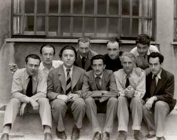

Principais Características do Surrealismo.
- Criação de cenas irreais;
- Pensamento livre;
- Valorização do inconsciente;
- Criação de realidade "paralela";
O surrealismo foi uma das vanguardas europeias que teve seu surgemente no século XX, pois foi um período marcado pelas duas guerras (1918-1939) conhecido como "os anos loucos", foi um período de insatisfação, desequilíbrio e contradições onde surgiram diversos movimentos artísticos voltados para uma nova interpretação e expressão da realidade, que ficaram conhecidos como "vanguardas europeias"
Também podemos citar um marco chamado Manifesto Surrealista de Andre Berton publicado em 1924. O surrealismo criticou a racionalidade burguesa em favor do maravilhoso, do fantástico e dos sonhos, abarcando uma quantidade de artistas, entre eles, podemos citar: na literatura, André Breton, Louis Aragon, Philippe Soupault e outros; nas artes plásticas, Joán Miró, Max Ernst, Salvador Dalí e outros; na fotografia, Man Ray, Dora Maar e Brasaï; e no cinema, Luís Buñuel.
Resumidamente nas palavras de Breton, um dos objetivos do surrealismo era "resolver a contradição até agora vigente entre sonho e realidade pela criação de uma realidade absoluta, uma suprarealidade". Adotaram algumas técnicas de produção artística como a escrita e a pintura automática, pois queriam de certa forma driblar os controles conscientes dos artiestas com a liberação das imagens que lhes surgiam à mente e de seus impulsos primitivos trazendo para a arte o irracional e o inconsciente.
Com tudo, lançou em Paris, em 1924, o Manifesto Surrealista, que trouxe para o mundo um novo modo de encarar a arte. Segundo ele o termo consiste em: "SURREALISMO, s.m. Automatismo psíquico puro pelo qual se propõe exprimir, seja verbalmente, seja por escrito, seja de qualquer outra maneira, o funcionamento real do pensamento. Ditado do pensamento, na ausência de todo controle exercido pela razão, fora de toda preocupação estética ou moral."
Grupo de artistas surrealistas nos anos 30: da esquerda para a direita: Tristan Tzara, Paul Éluard, André Breton, Hans Arp, Salvador Dali, Yves Tanguy, Max Ernst, René Crevel e Man Ray
O movimento surrealista no Brasil foi absorvido pelo movimento Modernista e seus artistas, pouco antes da década de 1930
Alguns historiadores dizem que o Surrealismo no Brasil não teve tanto destaque devido aos momentos históricos diferentes vividos na França, mas mesmo assim com pouca força, vale destacar grandes surrealistas brasileiros que deixaram marcas na cultura e na história da arte.
não foi um mas sim um conjunto de artistas surrealistas brasileiros que se uniram para dar um identidade artística brasileira, entre eles Ismael Nery, Cécero Dias e Tarsila do Amaral, trouxerão para o país o, até então, novo estilo na arte.
Também podemos citar que em 1928, Oswaldo de Andrade lançou o Manifesto Antropofágico, que rompeu as tradições literárias antigas, demonstrando sua oposição à realidade, assim como o surrealismo na Europa. Neste mesmo ano Tarsila do Amaral pintou "Abaporu", que foi de grande importância para o período.
Confira um trecho do Manifesto Antropofágico: "Só a Antropofagia nos une. Socialmente. Economicamente. Filosoficamente. Única lei do mundo. Expressão mascarada de todos os individualismos, de todos os coletivismos. De todas as religiões. De todos os tratados de paz. Tupi, or not tupi that is the question. Contra todas as catequeses. E contra a mãe dos Gracos. Só me interessa o que não é meu. Lei do homem. Lei do antropófago."